Offline Reinforcement Learning Review
Here I review two literatures on Reinforcement learning on healthcare to gain understanding on related field.
Reinforcement Learning in Healthcare: A Survey
全文主要着重于介绍目前rl在诊疗方面的应用，具体的方法并没有过多的阐述。II主要介绍了rl的基础概念和一些对基础rl方法进行提升的techniques。III简要的罗列了rl在医疗领域的分类。IV，V，VI详细的阐述了各个分类的rl的应用，对于不同的方法，综述主要着重于其MDP各元素的构建。VII和VIII重点探讨了一些在医疗领域中使用rl的难点已经对应的解决尝试，最后就是conclusion。对于难点的解释是比较关键的。
II
先介绍了基础的rl方法，然后分类讨论了一些帮助基础rl方法提升的技术
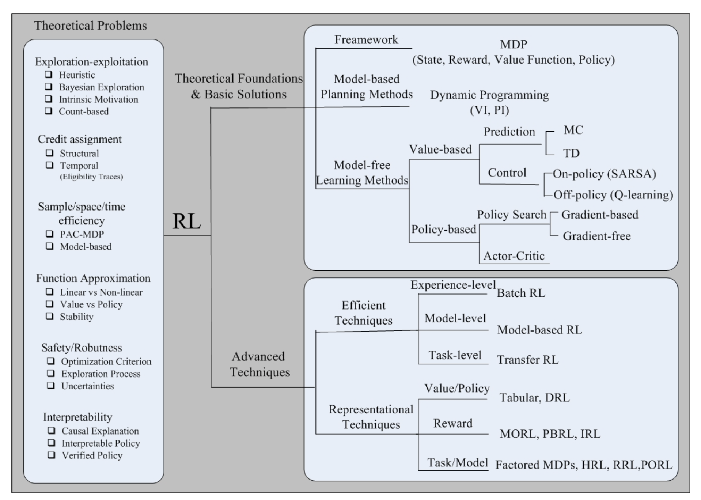
Key Techniques
- efficient directions: 简单的rl方法在用完一次trajectory之后就不用了，这里的technique令rl充分利用过往经验，更有效率的利用数据
- Experience-Level：令rl能不止一次地（充分地）使用过往经历
- batch rl
- fitted q iteration
- Model-Level：为环境建模，学到转移函数
- Task-Level：类似transfer learning？把一些别的任务上的knowledge转移到目标任务
- Transfer rl
- Experience-Level：令rl能不止一次地（充分地）使用过往经历
- representational directions：学习rl中的一些元素的表征，state，action，policy，reward等，避免人工定义
- representation for value function or policies
- model-approximation methods: 也是给想去给环境建模
- value-approximation methods: 利用function approximator去逼近value function
- policy-approximation methods
- representation for reward function
- quantitive reward to qualitative reward function
- 利用inversive rl和数据集的专家trajectories去学reward function
- representation for task or models
- Factored MDP =》把一个大的task解构成sets of variables
- dynamic bayesian network
- Hierarchical rl，把一个任务按照等级关系解构
- Relational rl，把一个任务按照object和relation解构
- Factored MDP =》把一个大的task解构成sets of variables
- partially observable mdp
- representation for value function or policies
III
大致介绍RL在health care领域的应用，早期的rl在医疗上的应用是药物注射的问题，近些年来提出的方法和应用如下图所示，接下来4-6都在分别介绍这些应用
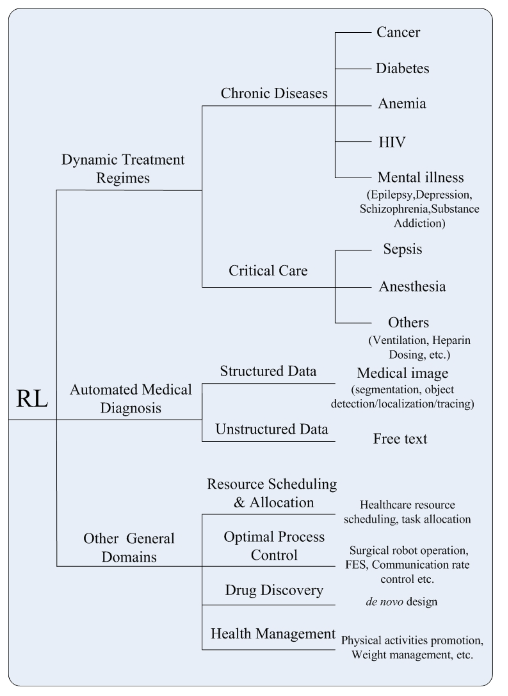
IV Dynamic treatment regimes
医疗方面的应用，不包含诊断。综述把rl的应用按照紧急程度->疾病->具体应用分类。
- 慢性病
- cancer 癌症
- diabetes 糖尿病
- anemia 贫血
- HIV
- mental illness
- epilepsy 癫痫
- depression 抑郁
- schizophrenia 精神分裂
- substance addition 药物成瘾
- ICU
- sepsis 败血
- anesthesia 麻醉（泛指所有带有镇静效果的药物使用）
- others
- Heparin 肝素
- ventilation 通风设备
- ordering of lab test
- graft versus host disease 移植物抗宿主病
下面两张表分别总结癌症和icu的应用
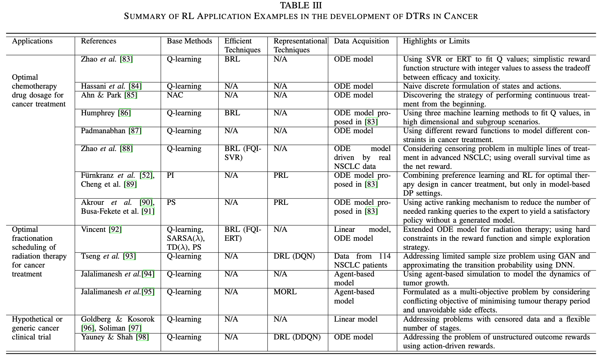
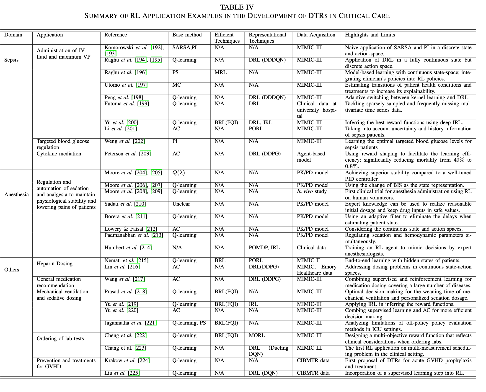
虽然病症不一样，但绝大部分的医疗建议探讨的都是dosage和timing。对于这些应用，医学界一般都有严格的准则，但这些准则都是基于病人的平均反应来设计的，所以缺少对病人个性化的医疗手段。对于dosage类型的应用来说，action会是discretized的用量水平，比如20-30，40-50这两种用量水平就是两个不同的action；而timing的action则是在某个时刻做/不做某事。至于state的构成，综述没有明确说明，一般都是利用医疗相关的知识去设计state。reward函数方面，大概分为：1. 利用医疗知识设计的单目标reward函数（也就是说agent只需要在训练时满足一个目标，比如致死率要尽可能低）2. 利用医疗知识设计的多目标reward函数（训练师满足多个目标，比如推荐某种药物的agent就要同时满足减少病症和减少药物的副作用这两个目标）3. 利用逆强化学习得到的reward函数。算法都是比较基础的强化学习算法（如上图）有些应用会先给环境建模，逼近一个转移函数从而利用model based的方法去训练他们的agent。在慢性疾病上的研究没有统一的数据集，对不同病症的研究基于不同的数据集，而这些数据集往往来自于某个trial，这就导致了有些研究可能面临着数据太少的问题，为了解决这些问题，有些论文会先学习数据的表征然后生成数据，如[93]用GAN去生成数据。icu的研究则有统一的数据集：MIMIC和PK/PD model。PK/PD模型PK/PD 建模（药代动力学/药效动力学建模）是一种结合了药代动力学和药效学这两个经典药理学学科的技术，一般用于药物的研究。
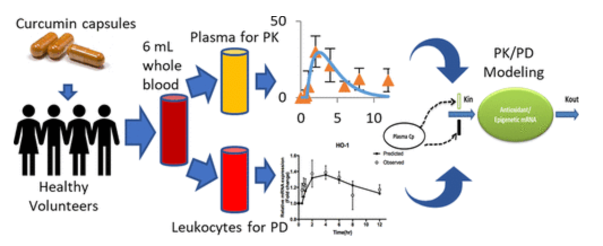
V Automated Medical Diagnosis
诊断方面的应用。这方面的问题，通常表述为监督分类问题，基于现有的临床诊断机器学习方法严重依赖大量带注释的样本，以推断和预测可能的诊断。这种问题受限于数据量，所以开始研究rl方面的应用。综述这里把方法通过输入类型来分类：结构化医疗数据和非结构化医疗数据。前者通常包含生理信号、图像、生命体征和实验室测试，后者通常指的是关于医疗的叙述性文本，例如实验室报告、临床记录和总结。
- Structured Medical Data
- 这类任务通常就是特征提取，图像分割和目标检测/定位/跟踪
- 这类的rl应用会先把问题规范成mdp。比如在一个肺结节分类的问题上，state由5个3d图像组成，action是不同的state间的任意转移，而目标则是找到距离end state的最短路径（end state表示为一个已知的恶性或良性的类别）
- Unstructured Medical Data
- 这方面的任务则比较广泛，综述提到的有诊断、风险评估，构造symptom checking系统（一种自我评估的过程，系统问用户一些问题并通过用户的回答给出具体的诊断）
VI Other Healthcare Domains
包含了所有非诊疗的应用，比较杂。
- Health Resource Scheduling and Allocation：和上面提到的timing问题类似，只是这里强调的是医疗资源而非某种药物的使用
- Optimal Process Control：最佳控制策略，包括手术机器人操作、功能性电刺激和医学视频流的自适应速率控制
- Drug Discovery and Development：对药物的开发
- Health Management：涉及rl系统给病人的提供适时的建议。综述提到两个应用，一个是为糖尿病患者建议适当的运动，一个是给身体过胖的患者提供体重管理建议。大概也能generalize到timing的问题。
VII Challenges and Open Issues
-
MDP的构造
-
state：state的构造要尽可能的丰富从而令agent可以推导出最优解，但dimension太多会带来计算上的难题。综述认为，当有expert policy（医生本来的诊疗策略）的情况下，应该以最接近产生这种数据的行为政策的方式来定义各state。大部分的方法都是直接利用原始生理、病理和人口统计学信息，[307]论述这种构成没有考虑到state的时间依赖，已经构成一个state的变量之间的依赖，缓解的办法是dynamic bayesian network
但是即使把state定义好了，训练数据上的问题会带来影响，训练数据一般有以下两种严重的问题
- missing，要观测的变量上的缺失，解决办法是用各种插补方法
- censoring：要观测的变量只有部分是可知的，比如要知道x的体重，但数据里只有“x至少60kg”，这就需要在设计state时能够更加的灵活
-
action：构造action时，大量的研究都只是构造了离散的action，如果用在timing的问题（做和不做）当然没问题，但是如果是dosage之类的问题就行不通，需要构造连续的action，连续的action会大大增加算法的复杂度，所以构造action的目标是：在连续和高维行动空间中有效选择行动的方法，同时保持低探索复杂度
-
reward：reward的构造一般有以下两种方式
-
quantitive reward：就是把reward假设成是数字，是大多是研究的做法。问题是这个数字的决定基本全部基于医生的个人经验，并且还会很大程度上影响到后期agent的表现。
-
qualitative reward：把reward变成preference，如下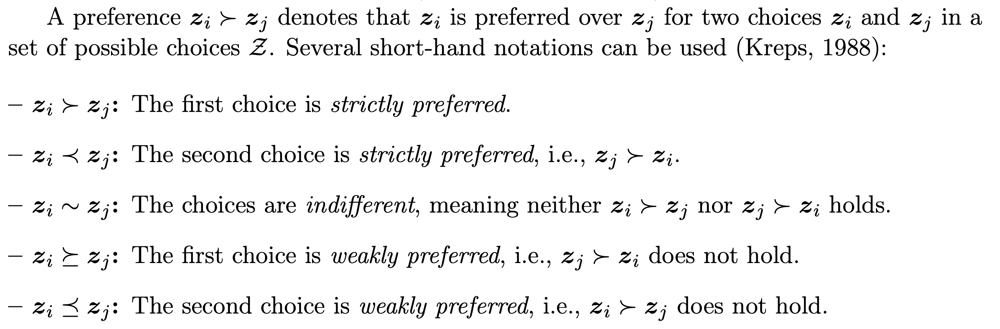
目前这东西放到rl里面去的时候，可以把reward用ranking function去代替->[51], [310]。相关研究不多[52], [89], [178]
这些reward函数都可以变成multi-object的reward函数，比如推荐某种药物的agent就要同时满足减少病症和减少药物的副作用这两个目标，这方面的研究也不多 [177], [311], [176], [222]。同时，这些reward函数除了手动定义，还可以根据逆强化学习得到，但使用逆强化学习，但因为逆强化学习大部分都基于训练数据，上面提到的数据中的问题也会影响逆强化学习。同时，短期reward和长期reward的平衡也是问题，在不同的医疗策略中的侧重点不同
-
-
-
Policy的评估：如何正确验证一个训练出来的policy的好坏
-
Model Learning：有些方法会尝试学习环境的转移函数。但这些方法局限于离散的state。
-
Exploration Strategies 探索策略：指的是如何决定agent在训练时什么时候该严格遵守学到的策略去完成动作，什么时候该去探索些新的方向。大部分的文章研究局限于使用简单的探索策略，比如在每次训练时，随机判断是否探索，在实际中会带来很大的问题。当数据集中的数据极其不均衡，比如hiv的数据集中，只有少部分病人最后的情况时变好了的，这样简单的探索策略起不到作用。并且探索在医疗领域显得极为昂贵，因为有些步骤可能是决定性的，不论后面用多好的策略去弥补也无济于事
-
Credit Assignment：指的就是如何决定各个步骤的行为对最终结果的影响，这个问题可以分成下面两种
- temporal credit assignment：不同的时间步下的行动对最终结果的影响，大多数这方面的研究都在研究这方面。比如在研究胰岛素的医疗决策时，如何对上午做运动或午餐后打胰岛素这两个行为给予打分，这两个行为都有可能在下午引起低血糖。
- structure credit assignment：考虑的是在相同的时间步内，不同的action的影响，或者是当有同时训练的多个agent时他们的影响
完成这样的任务可以增加模型的可解释性
VIII Future Perspectives
展望明天
- Interpretable Strategy Learning：模型的可解释性，简单的rl得出来的policy缺乏可解释性，导致她很难反应feature和action之间的关系。这样就会导致医生在实际应用中使用rl生成的办法。通常的解决办法是使用些解释性较强的模型去建模得到的policy。
- integration of prior knowledge：如何把过往医疗领域的知识加入rl模型中，一般有三种方式：
- 直接修改/增加模型能力，比如[337], [135]在研究贫血的时候，他们就结合了医疗领域的知识（要研究的药物和病人的状态的一个指标是正相关的），产出了一个更好的模型
- transfer learning in rl：和ml的transfer learning一样，这种办法尝试直接利用之前别的任务的模型的参数来完善现有的任务
- Human-in-the-loop interactive rl：这个就是在rl的训练过程中，配备专业医生，从而解决数据集不完整等问题，在一定程度上知道模型的训练
- learning from small data：如何在数据集数量受限的情况下，依然训练不错的模型？有两种被研究的解决办法
- data augmentation：利用现有数据和一些方法如GAN去生成训练数据
- 更高效的学习：另一类解决方案是应用各种模型修改或领域适应方法，如知识提炼[347]或元学习[348]，以实现高效学习，克服数据稀缺的问题。
- Healthcare under Ambient Intelligence：ambient intelligent指的是因为目前穿戴设备，手机传感器等科技的兴起而带来的新型人机互动。这样的智能让收集数据变得更加简便。这样的科技让rl可以更多的和环境交互。就像前面说的一样，rl可以通过手机/穿戴设备提供的糖尿病人的指标为糖尿病人提供运动建议，然后也可以实时获得反馈
- Future in-vivo studies：目前很多的研究都依赖于in silico模型去得到action对state的影响，in silico指的是”在计算机上或通过计算机模拟进行”，但是明显，in-vivo的模型对agent表现的判断更可靠，in-vivo指的是”使用完整的、活的生物体进行实验，而不是使用部分或死的生物体。“
Conclusion
- 即使很多问题都被addressed了，因为medical data processing 和 policy learning非常复杂，依然很难求直接应用这些solution
- 需要继续努力的方向：Interpretable learning, transfer learning, small-data learning
- in practice，tailor existing rl methods去处理Ambient Intelligence和安全，稳定，效率的考虑是两个重要的paradigms
Reinforcement Learning for Clinical Decision Support in Critical Care: Comprehensive Review
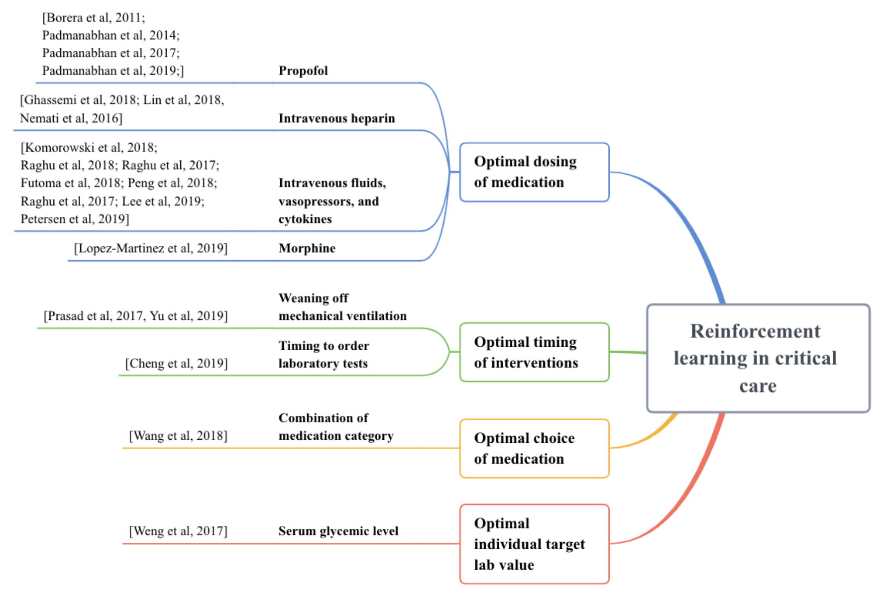
Results
Optimal individual target lab value
-
target lab value指的就是一些在临床上的实验室的指标，比如需要病人的心率等等
-
[46] 探讨的是target blood glycemic range（hourly interval）for severely ill patients with sepsis
-
使用的数据集是MIMIC III，抽取了其中5565个有sepsis的病人
-
使用了policy iteration算法，这个算法就是在第一步先用q function去学习一个pi，第二步用pi去得到一个新的q function
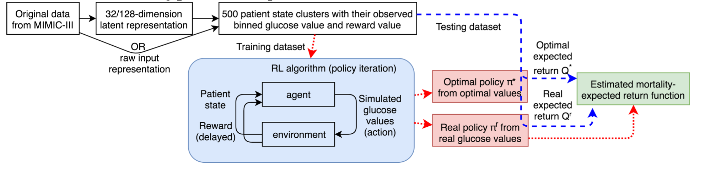
-
抽取了128个特征，用auto encoder把他压成32个维度，action是11个不同的glucose值的discrete range，如果一个病人在90之后没死，那么reward是+100，死了的话reward是-100
-
光从综述的介绍来看，并没有对reward值做任何的处理，且没有声明如何解决distributional shift这个问题，他们先论证了他们设计的reward值和死亡率成反比：作者首先按照value bucket的形式分类state action pair，例如sa1和sa2都有value 3，那么这两pairs就会被assign进3. 然后作者研究在test data中出现的trajectory，如果某个s-a pair出现的trajectory的end state是死亡，那么这个s-a就会被 label 1，这样把各个value bucket中的s-a pair的label给加起来，就可以得到value- mortality的对照。 得到这个对照之后，作者就论证reward值越高，死亡率越低。结果是他们的agent跑出了一个新的q value，并且这个q-value对照过去的死亡率比原来的最优低了6.3%
Optimal choice of medication
显而易见，choice of medication就是药物的组合
-
[47]探讨的是利用deep learning network去研究medication recommendation
-
使用的数据集是MIMIC III，抽取了关于前1000种药物，和前2000种疾病的医疗记录。
-
把1000种药物归成180个类别
-
action就是这180个类别的组合，如果一个病人在离开医院之前没死的话reward就是+15，死了的话reward就是-15，别的都是0

算法中有三个地方需要注意：actor，critic，lstm
-
actor网络会根据state来推荐药物治疗，但是这个actor网络跟平常的actor网络不一样，平常的actor的目标函数就是maximize Q，但这个actor的网络除了maximize q，还会minimize agent预测的动作和医生给出的动作的距离：$J(\theta)=(1-\epsilon)J_{RL}(\theta) +\epsilon(-J_{SL}(\theta))$. 理论上尽量不让agent得出的东西太离谱
-
critic则类似于普通的actor-critic方法，他的目标就是预测给$J_{RL}$用的q function
-
因为现实的原因，很难观察到完整的mdp，所以使用POMDP=>
(S, A, R, O)，前三个和mdp一样，o则是一系列的观察，这些观察由另一个概率分布去决定。在这里作者在每次训练的时候，都把之前的观察用lstm的方法加和起来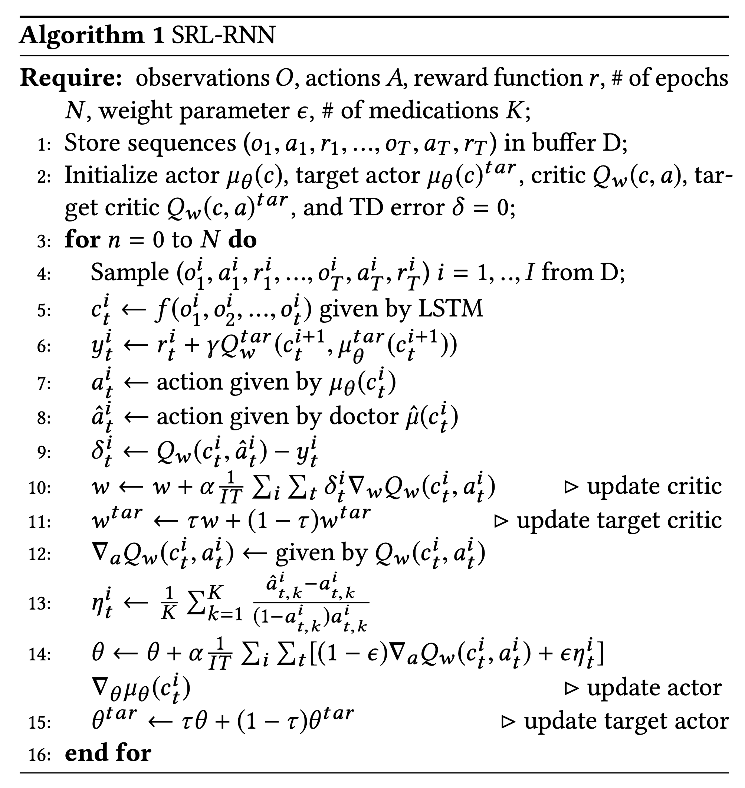
-
-
验证的收获用了和[46]一模一样的mortality方法，还使用了Jaccard coefficient去measure the degree of consistency between prescriptions generated by different methods and those from doctors
-
他们的方法成功降低了死亡率(4.4%)
Optimal Timing of Intervention
Weaning of Mechanical Ventilation
这些作者探讨的问题是什么时候该中断这个mechanical ventilation（好像就是呼吸机？？？）
[43]
-
利用了RL based fitted q iteration去做这个任务，这个算法完全离线，完全off policy，只基于训练数据
-
使用的数据集是MIMIC III，抽取了所有需要呼吸机的病人的数据，action定义于十分钟的间隔，拔还是不拔呼吸机，reward的话，如果一个病人戴呼吸机戴太久了，那么就要penalize，如果一个病人在一系列的行动之后拔了呼吸机后，他的各项指标都稳定且处于合理的范围内，那么就要奖励，如果拔了呼吸机又给他插上去了，那么这没有reward
-
使用的算法是fitted q iteration
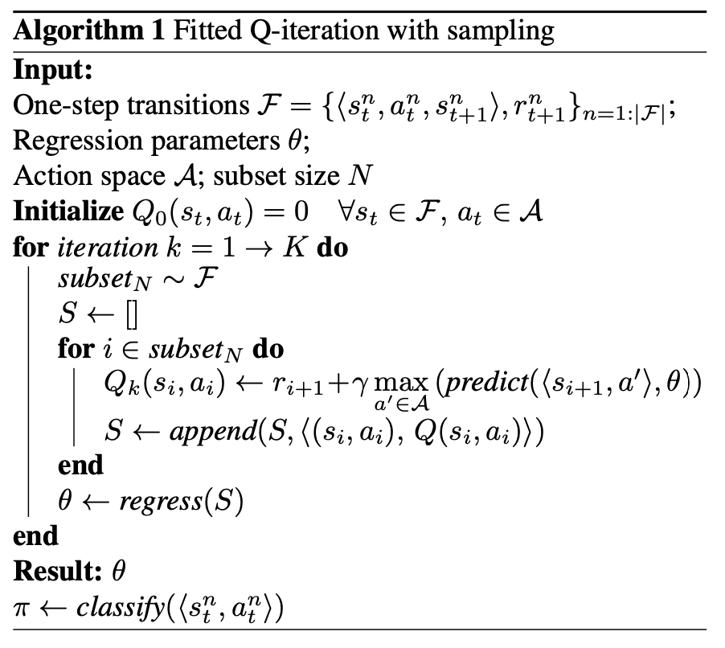
-
他们的衡量算法先判断agent的决策和医生的决策的差别，然后算出一个consistency，发现agent的决策有85%和医生的决策是重合的。然后把consistency值和vital sign的值放在一起，发现consistency越高，vital sign越稳定
[45]
-
除了判断一个合适的中断MV的时间，这里还判断了使用sedative镇静剂的剂量，把镇静剂限定在了一种叫做propofol的上面，所以是中断MV的时间+propofol
-
使用的数据集是MIMIC III，从里面抽取了707个使用了propofol的记录，但是他们使用的variables有很多的单位是不一致的，指的是测量的间隔不一样，所以他们用svm去拟合这些variable=》$SVM_{variable1}(measurement\ time)=measurement$去预处理数据，从而使他们的单位一致
-
呼吸机的action就是拔和不拔，像[43]一样，而镇静剂的使用量则是被分割成了几个range(像46一样)，reward是自己学出来的
-
使用的算法是bayesian irl with fitted q iteration，学习q value的算法就是简单的，像上面那样的fitted q iteration，但是有区别的是，这里用到的reward function，是通过逆向强化学习inverse reinforcement learning去学习出来的。大意是先随机生成一个reward，然后用这个fitted q iteration去学习在这个reward下的optimal policy，然后就算${P(O R’)}$，也就是在这个reward下，能够得到数据集中的expert trajectories的概率，然后尝试去minimize这个概率 
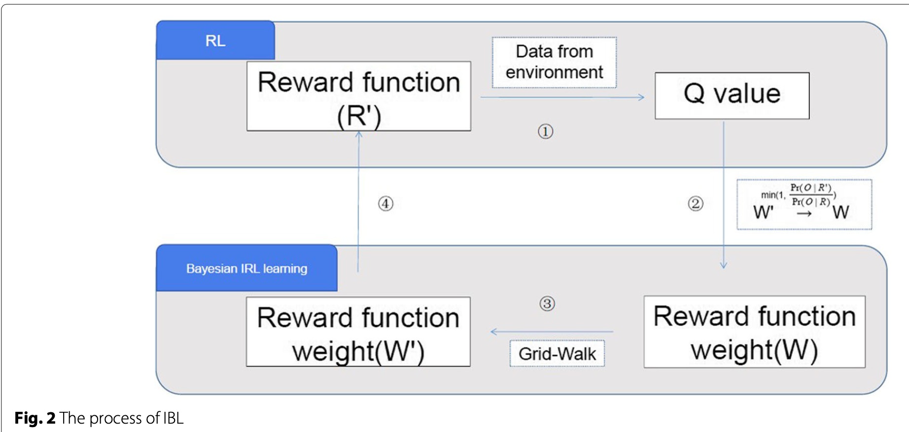
- 使用了action和专家move的重合度来判断，然后做了实验来对比自己设计的reward function和用逆向强化学习学出来的reward function的表现。自己设计的reward function：其中一个match 99.6% in ventilation，53.9% in sedative；另一个match 14.1% jointly。irl学出来的match 99.7% in ventilation，sedative 54.2%。
Timing to Order Laboratory Tests
这里探讨的是应该什么时候执行lab test，如果这个test执行的太晚，病人可能会有很多问题没能被监视到；如果执行的太频繁，那么会造成不必要的成本上的增加，以及病人的负担
[44]
-
研究了关于给sepsis病人做test的timing
-
数据集是MIMIC III，抽取了6060 patients with sepsis
-
action就是每隔10分钟做不做test，reward由四个部分组成，如果test是必须的，那么有reward，如果over/under ordering的话，penalizing；当实验结果或者vital sign有改变的时候，agent应该去order test；如果t时刻的lab result和t-1时刻的lab result一致的话，negative reward；testing cost应该直接作为一个负的reward
-
fitted q iteration
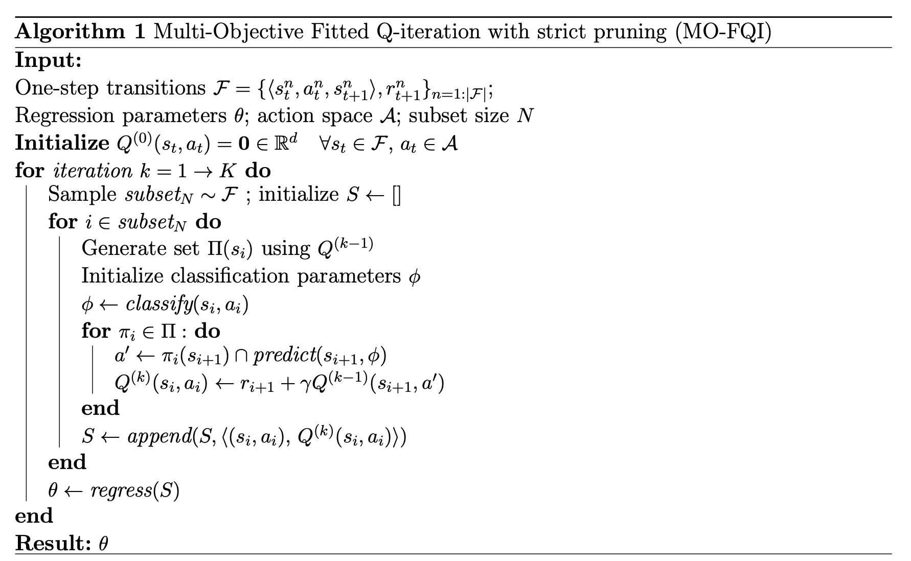
-
evaluation用PS-WIS(per step weighted importance sampling)去评估这个policy的分数，和三个更直观的measures：总lab test数量上的减少、平均information gain、time intervals between labs and subsequent treatment onsets
Discussion on datasets, features, preprocessing, techniques, evaluation
- datasets
- MIMIC III: [46], [47], [43], [44], [45]
- features preprocessing(multiple occurrences of single paper indicate that the paper combine methods listed to deal with that corresponding issue)
- missing variable:
- sample-and-hold interpolation: [43]
- SVM: [45]，[45]直接用svm把这个也处理了
- linear interpolation: [46]
- piecewise constant interpolation: [46]
- k-nearest neighbours: [47]
- remove: [46], [47]
- multi-output Gaussian process from work: [44]
- dimensionality reduction:
- feature
- auto encoder: [46]
- clustering: [46]
- action
- discretionalize: [46], [45]
- categorization: [47]
- feature
- measurement alignment:
- SVM: [45]
- multi-output Gaussian process from work: [44]
- missing variable:
- evaluation
- reward2mortality: [46], [47]
- consistency with doctor’s prescription: [43], [45]
- PS-WIS: [44]
- handcrafted: [44]
Offline Reinforcement Learning: Tutorial, Review, and Perspectives on Open Problem
Introduction
Offline reinforcement learning algorithms: offline的强化学习中，在训练的时候，我们要学习的policy和环境不做任何的交互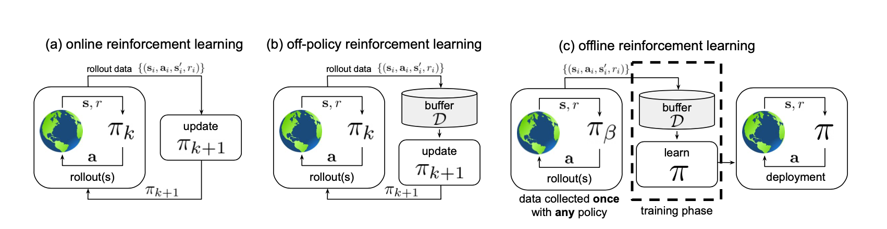
这张图给了一个很好的例子，a和b描述的都是online强化学习。a描述的是on policy的强化学习，也就是当policy在训练的时候，我们先用policy去和环境做交互，得到trajectory，然后用这个trajectory去更新policy；而在b中，我们用policy去和环境交互，得到的trajectory存在buffer D中，然后在buffer D中进行采样，采样出来的trajectory被用来更新policy。但是在offline的c中，我们有的是数据集中的trajectory（这些trajectory来自一个假设的，未知的policy得到的），我们从这这些trajectory中进行采样，然后用采样出来的trajectory中进行更新policy。我们可以看到，在c中，要训练的policy和环境完全不做任何的交互，所有的更新都来自于之前的数据集
- 当我们用function approximator去逼近Q(s,a)的时候，如果这个function approximator的维度很大，这个问题会被加剧
- simulation of real-world transfer是解决这个问题的办法，模拟一个环境出来，然后用这个环境去训练policy，这个解决办法似乎只是把这个设定再次变成了online rl而已，而没有实现真正的data driven offline reinforcement learning
Offline Reinforcement Learning Problem Statement and Overview
Reinforcement Learning Preliminaries
强化学习都是和一个markov decision process(MDP)交互来训练的。
- Policy Gradient: 直接学policy，他involve一个计算reward和return的过程，如果把计算reward和return的过程也有函数逼近器去做的话，就变成了actor critic
- Approximate dynamic programming：学习value function，value function一般指的是q value，也就是q(s, a)。
- q learning：很简单，先学到q function，然后在q function的基础上贪婪的在state中选择最大的a。
- 变种1：加入target network，本来q learning的目标函数是$Q^{}(s_t, a_t) = r(s_t, a_t)+\gamma (max_{a_t + 1}Q^(s_{t+1}, a_{t+1}))$，但是在加入了target network之后，他的$Q^{}(s_t, a_t) = r(s_t, a_t)+\gamma (max_{a_t + 1}Q_{\theta k}^(s_{t+1}, a_{t+1}))$。也就是说在右边的Q，用的是之前学到的q，而不是最新的q
- actor critic：在policy gradient的基础上，把policy function和value function都parametrized，然后用学到的value function给policy gradient中设计计算reward和return的部分更好的approximate，有点像policy iteration
- policy iteration就是先用这个policy去更新整个value function，然后再用value function去更新policy
- q learning：很简单，先学到q function，然后在q function的基础上贪婪的在state中选择最大的a。
- model-based reinforcement learning：既不学policy，也不学value，先学环境的transition function
Offline Reinforcement Learning
- 又被称为fully off-policy或者是batch reinforcement learning
- 这个问题可以被规范为：只要一个强化学习算法，他仅仅使用一个巨大的buffer of trajectories进行更新，不和环境做任何交互。并且这个buffer中的trajectoies都是由另一个policy去得到的。这样的强化学习算法，被统一称为offline reinforcement learning。上面的off policy算法都可以直接应用，只要省去用policy和环境交互得到trajectory并存入buffer这一步就好了，并且buffer中存的trajectory是别的policy得到的。
What Makes Offline Reinforcement Learning Difficult?
- 因为他的trajectory是完全基于static的数据集的，所以exploration是完全不可能的
- 和监督学习不一样，监督学习训练的模型顶多as good as训练数据集，但offline rl的目的是超过数据集本身，offline rl最主要目的是回答counterfactual queries，就是what if的问题。所以offline rl需要carries out的行动肯定和数据集里的动作somewhat different
- 最主要的难点是distributional shift，也就是分布上的变化。监督学习假设要学习的训练数据集的样本都是独立同分布，也就是他们之间不相互影响，且来自于一个分布。但是对于强化学习来说，一个agent的next state，由这个agent在这一个时刻的policy来决定，所以破坏了独立同分布的条件。不是独立同分布，那么数据集本身就没有泛化能力。这就是离线强化学习最大的难点，那就是我们可能会遇到一个根本没见过的state。当一个agent在某个state犯了个错，那么他接下来遇到的是没见过的state，然后错误就会开始！递增！！！！